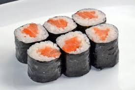

Hossomaki

Hossomaki is a type of sushi roll. Hosoi means slim or thin in Japanese, so Hossomaki is translated as a thin roll. Only a half sheet of nori is used to make hossomaki. Hossomaki can be your first sushi roll to make if you have never tried making it.
Ingredients
- Nishiki Rice (60 g)
- Salmon (40 g)
- Nori Seaweed (19x21 cm)
- Wasabi
- Ginger Vinegar
Steps
- Prepare sushi vinegar by mixing ginger vinegar, sugar, and salt.
- Blend rice and ginger vinegar thoroughly.
- Prepare the salmon.
- Lay the nori sheet, rice, and the filling on a makisu to prepare for the rolling.
- Hold the filling with your finger and start rolling, applying gentle pressure to shape.
- Let it sit for a few minutes and slice it into small pieces.